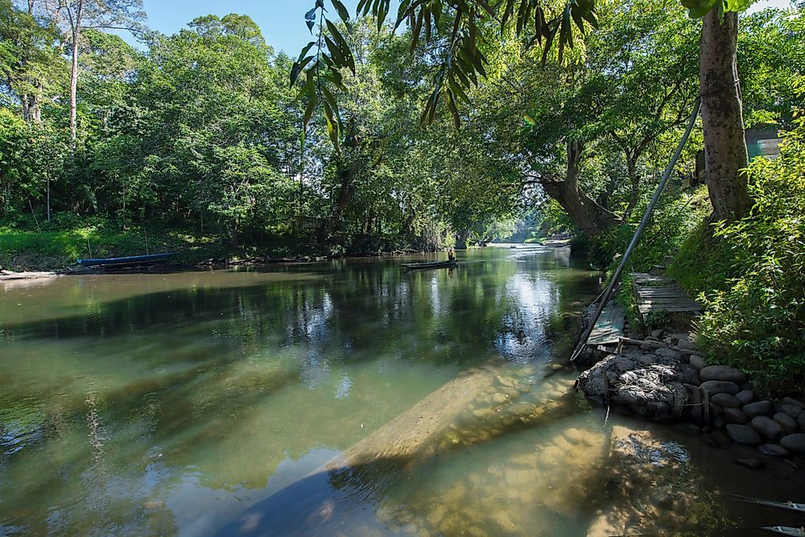
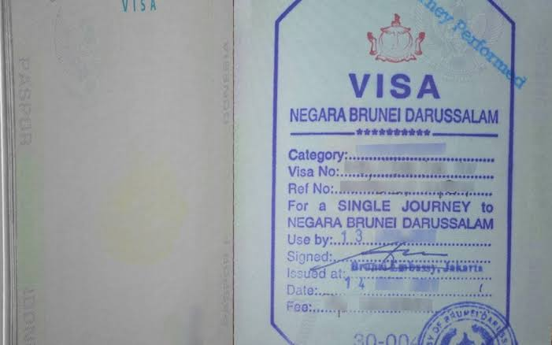
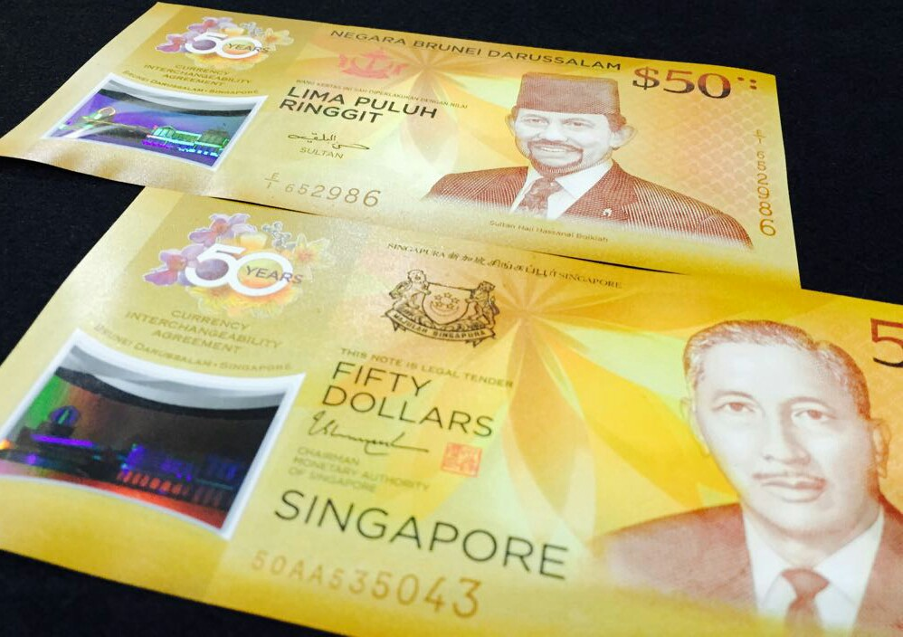
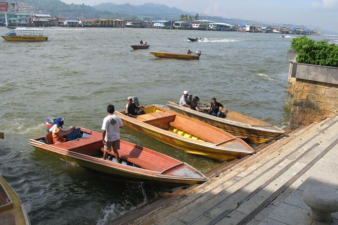

Essential Travel Information
Everything you need to know before touching down in Brunei Darussalam—from equatorial weather tips and entry requirements to local currency and convenient transport options.
Traveler Handbook
Hover over any card below to reveal a preview image and click to enlarge.

Tropical Climate
Brunei enjoys a warm equatorial climate year-round with steady daytime temperatures ranging between 28°C and 32°C. Lightweight, breathable fabrics are ideal, and packing a compact umbrella or light raincoat is recommended for occasional afternoon tropical downpours.

Visa & Entry Requirements
Ensure your passport has a minimum validity of six months. Citizens from ASEAN member states, the United Kingdom, the European Union, the United States, and numerous other nations benefit from visa-free entry or straightforward visa-on-arrival processing at Brunei International Airport (BWN).

Currency & Payments
The official legal tender is the Brunei Dollar (BND), which is equivalent to (1:1) with the Singapore Dollar (SGD). Singaporean notes are accepted interchangeably everywhere. Major credit cards are widely welcomed in hotels, shopping malls, and restaurants, though carrying cash is recommended for night markets and rural excursions.

Local Transit
Getting around Bandar Seri Begawan is efficient using the local ride-hailing mobile app Dart. For an authentic cultural experience, hail a traditional motorized wooden water taxi (tambang) along the Brunei River waterfront for a quick BND $1–$2 crossing directly into Kampong Ayer.
Official Tourism Portals
Access verified government resources, flight schedules, and entry declarations.